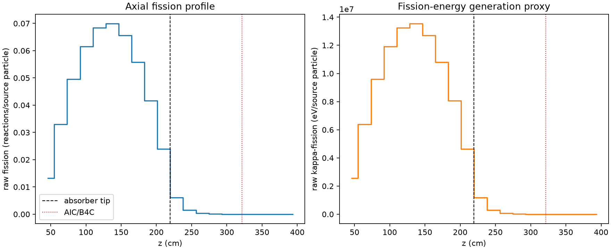
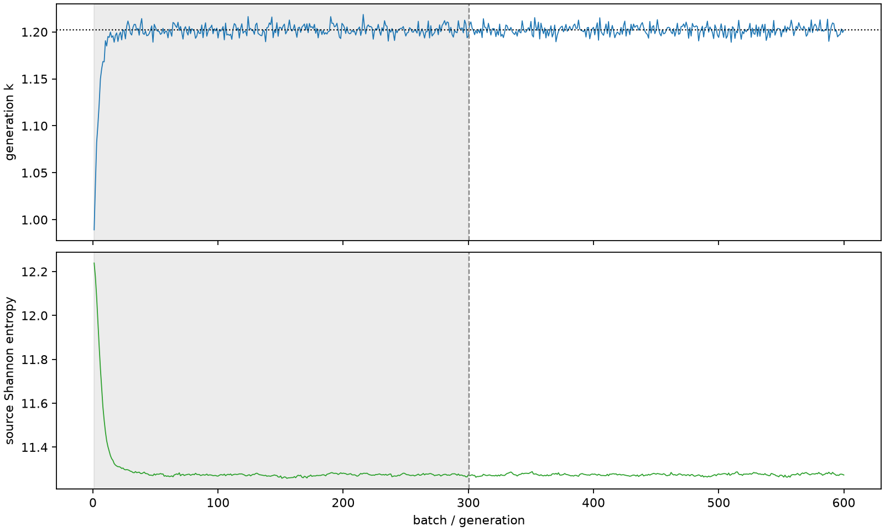

| field | value |
|---|---|
| experiment | V2-ADVISOR_PILOT8-0004 |
| k | 1.2024495334731615 |
| MC standard error | 0.00018350504917630445 |
| seconds | 1080.7332957180042 |
| acceptance | not_assessed |
| convergence | review_required |
Completed is output integrity only; physical and statistical review required. Zero tallies do not prove zero production or zero uncertainty.
| diagnostic | value |
|---|---|
| geometric fuel voxels | 5280 |
| zero fission tally voxels | 509 |
| low signal fuel voxels | 1591 |
| low signal fission share | 8.770557395396839e-05 |
| low signal kappa share | 8.77248166851404e-05 |
| important fission share | 0.9500395569958174 |
| previous filter included | 3689 |
| duration estimate s | 1562.5173488400023 |
| actual minus estimate s | -481.7840531219981 |
| fission relative MC error | statistics |
|---|---|
| all_geometric_fuel | {"voxels": 5280, "positive_mean_voxels": 4771, "zero_mean_voxels": 509, "undefined_relative_error_voxels": 509, "median": 0.014180606041906161, "p95": 0.8710260176754161, "maximum": 1.0000000000000002} |
| low_signal | {"voxels": 1591, "positive_mean_voxels": 1082, "zero_mean_voxels": 509, "undefined_relative_error_voxels": 509, "median": 0.6078069873221017, "p95": 1.0, "maximum": 1.0000000000000002} |
| important_95pct | {"voxels": 2340, "positive_mean_voxels": 2340, "zero_mean_voxels": 0, "undefined_relative_error_voxels": 0, "median": 0.0077225848834878395, "p95": 0.011623909616330594, "maximum": 0.014683494190643749} |
| outside_previous_filter | {"voxels": 1591, "positive_mean_voxels": 1082, "zero_mean_voxels": 509, "undefined_relative_error_voxels": 509, "median": 0.6078069873221017, "p95": 1.0, "maximum": 1.0000000000000002} |
| kappa_fission relative MC error | statistics |
|---|---|
| all_geometric_fuel | {"voxels": 5280, "positive_mean_voxels": 4771, "zero_mean_voxels": 509, "undefined_relative_error_voxels": 509, "median": 0.01416405720724532, "p95": 0.8703901703286878, "maximum": 1.0000000000000002} |
| low_signal | {"voxels": 1591, "positive_mean_voxels": 1082, "zero_mean_voxels": 509, "undefined_relative_error_voxels": 509, "median": 0.6070669284822181, "p95": 1.0, "maximum": 1.0000000000000002} |
| important_95pct | {"voxels": 2340, "positive_mean_voxels": 2340, "zero_mean_voxels": 0, "undefined_relative_error_voxels": 0, "median": 0.007714129584795892, "p95": 0.011609897567812093, "maximum": 0.014665590125521627} |
| outside_previous_filter | {"voxels": 1591, "positive_mean_voxels": 1082, "zero_mean_voxels": 509, "undefined_relative_error_voxels": 509, "median": 0.6070669284822181, "p95": 1.0, "maximum": 1.0000000000000002} |
| axial bin | fission share | kappa-fission share |
|---|---|---|
| 1 | 0.02703776270860924 | 0.027038839059934847 |
| 2 | 0.06715344576773537 | 0.06715284001683032 |
| 3 | 0.10093904474743523 | 0.10093839169869044 |
| 4 | 0.12546947302286365 | 0.1254688865217311 |
| 5 | 0.13946103375313967 | 0.13946019132312837 |
| 6 | 0.14237486314279743 | 0.14237412834280158 |
| 7 | 0.13365550216274494 | 0.13365472767821743 |
| 8 | 0.11374240261651267 | 0.11374147079905184 |
| 9 | 0.08487673462809049 | 0.08487624446229194 |
| 10 | 0.048693726677290515 | 0.048693716914623014 |
| 11 | 0.012377650948874603 | 0.012380930644156818 |
| 12 | 0.0031004081795794713 | 0.0031013257500512236 |
| 13 | 0.0008198704529989056 | 0.0008201288866522357 |
| 14 | 0.00021785369547579753 | 0.0002179315513402004 |
| 15 | 6.161158407018325e-05 | 6.162432978394388e-05 |
| 16 | 1.2857022325267722e-05 | 1.2861810197924142e-05 |
| 17 | 4.720225905427407e-06 | 4.720369758891883e-06 |
| 18 | 9.824844787618752e-07 | 9.834757211049668e-07 |
| 19 | 5.6179072348478665e-08 | 5.636503656994857e-08 |
| 20 | 0.0 | 0.0 |
Histories include the inactive-to-active transition at batch 300. kappa-fission approximates fission energy production, not total heat deposition.

